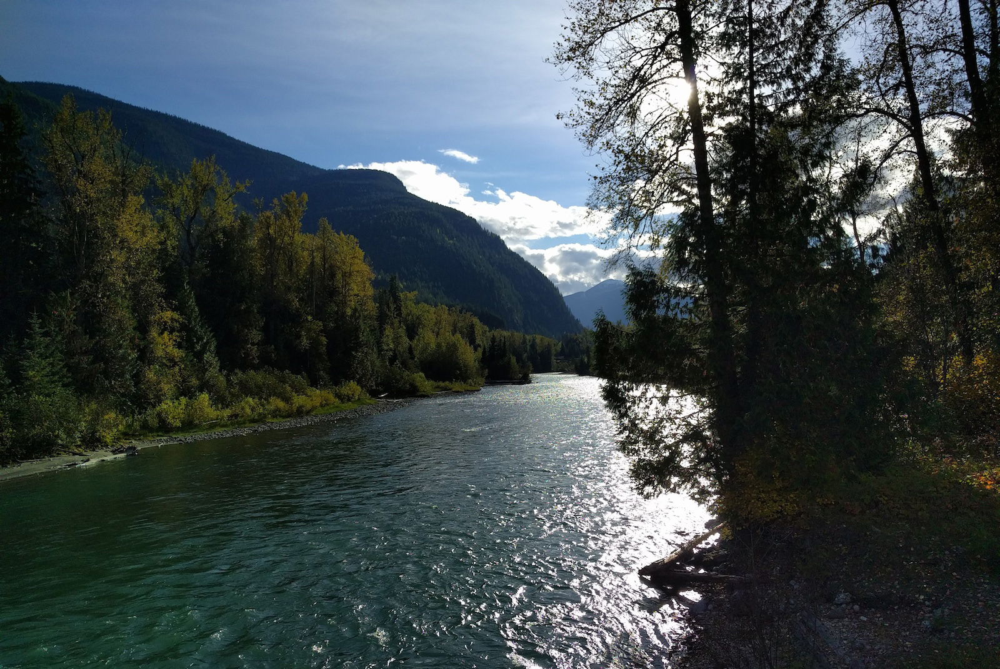
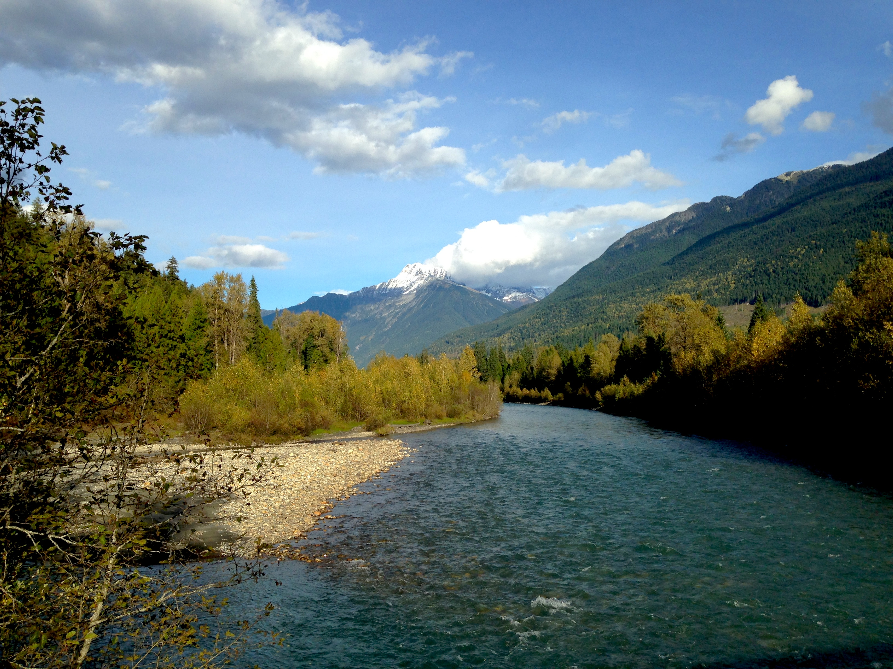
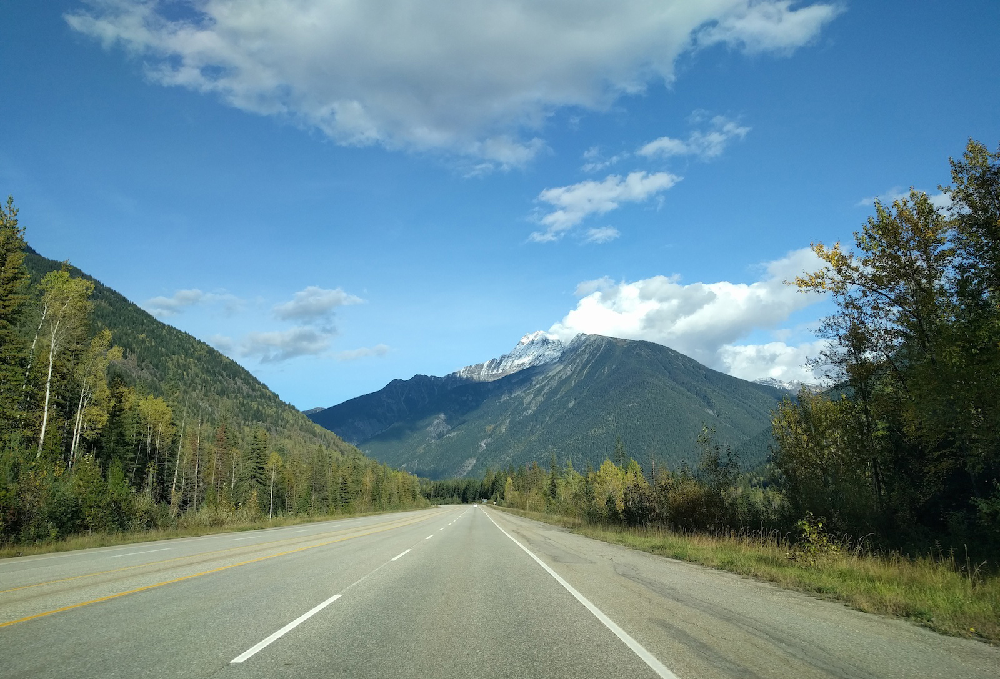
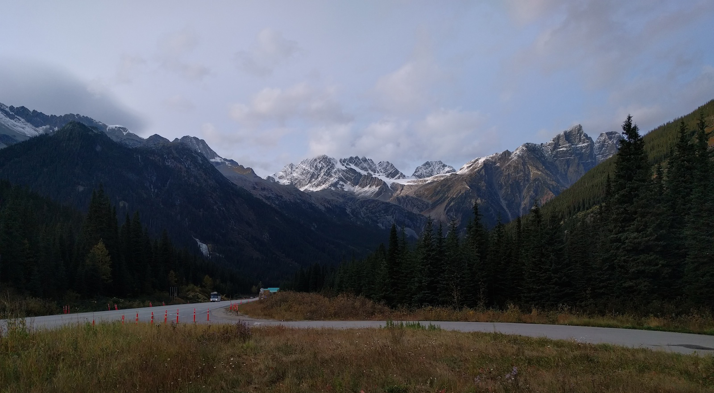
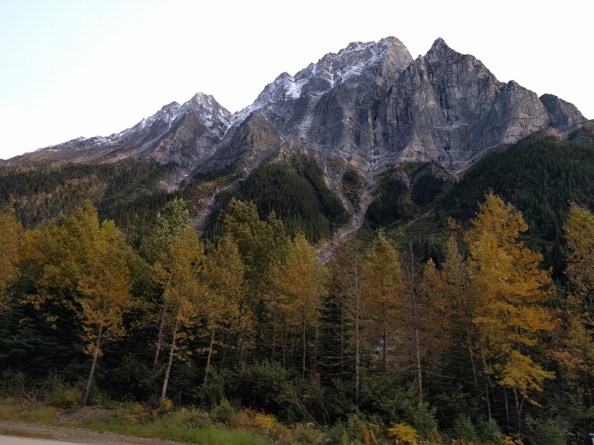
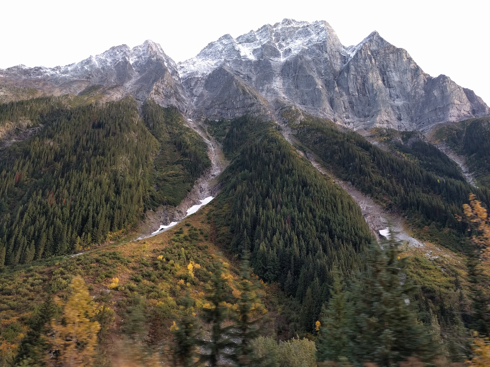
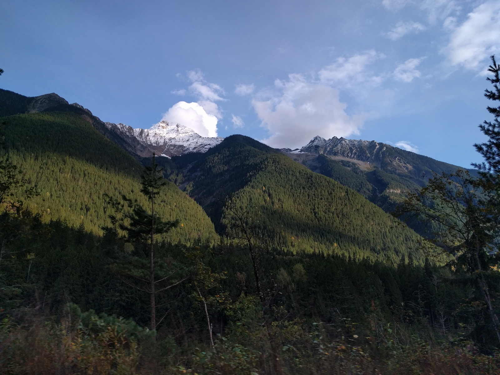
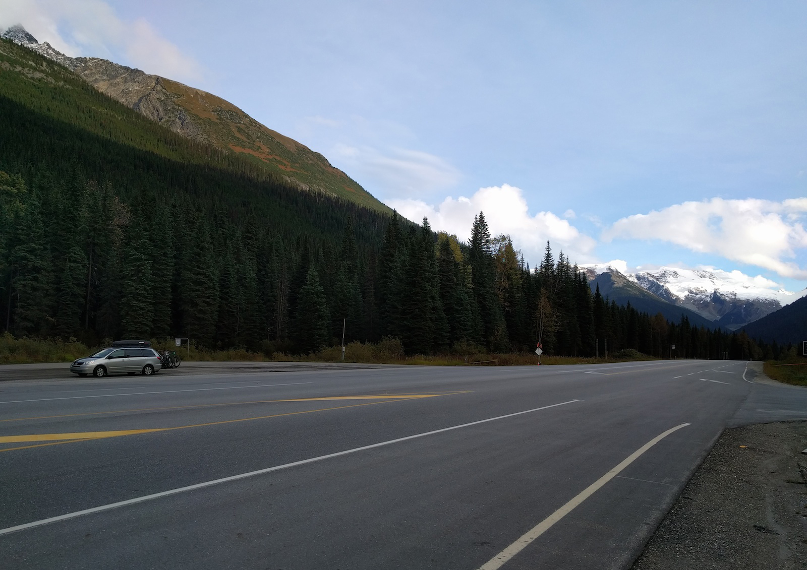
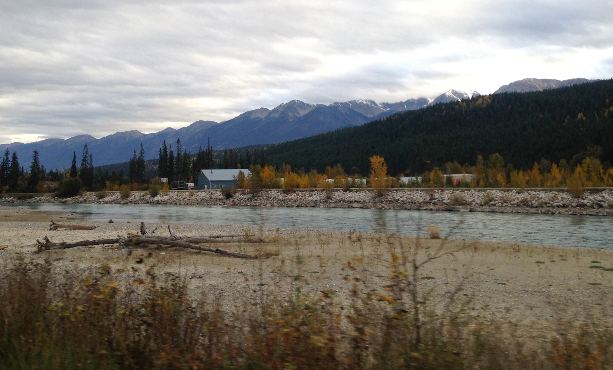

Snow was falling in the mountains when we arrived in Revelstoke. Our chances of shuttling to the top of Martha Creek were slim but we got lucky and enjoyed this view from the top of Sale Mountain the next morning. Thanks Wandering Wheels!
It was a cold start, but Martha Creek trail was awesome!
From the top of Sale Mountain the trail follows Martha Creek 5000 ft and 5 miles down to Lake Revelstoke.

We followed the Illecillewaet River out of Revelstoke.

The drive from Revelstoke to Golden BC through the snowcapped Selkirk Mountains was incredible.

A closer look at Albert Peak.
Glacier National Park
The top of Rogers Pass Glacier National Park Canada.

The Selkirk Mountains are older than the Rocky Mountains. They are not as tall as the mountains we are used to in CO but they are incredibly steep.


Avalanches are very common in this area because of the steepness of the peaks but Rogers Pass is very rarely closed.


It is day 24 of our month long road trip to BC and our time living in the van is coming to an end.
Golden
On the East side of Glacier National Park is the town of Golden BC. Golden sits at the confluence of the Columbia and Kicking Horse rivers and is surrounded by 3 different mountain ranges. It is also home to Kicking Horse Mountain Resort.

The weather was completely overcast and very chilly, but we got a few solid laps in at Kicking Horse before they closed the lifts for the season. The bike park was nuts! Extremely steep loamy and rocky.
Once we were thoroughly frozen from both fear and the cold weather we headed south to Radium Hot Springs to relax and get warm.